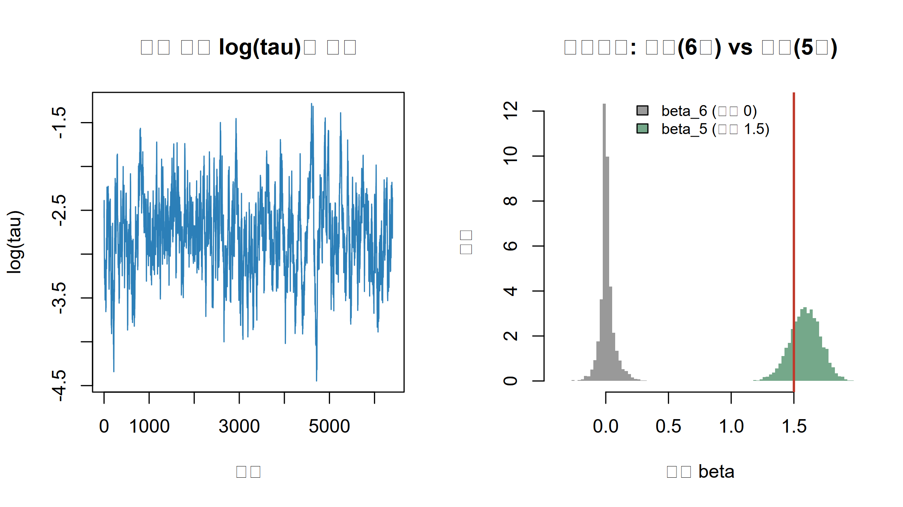
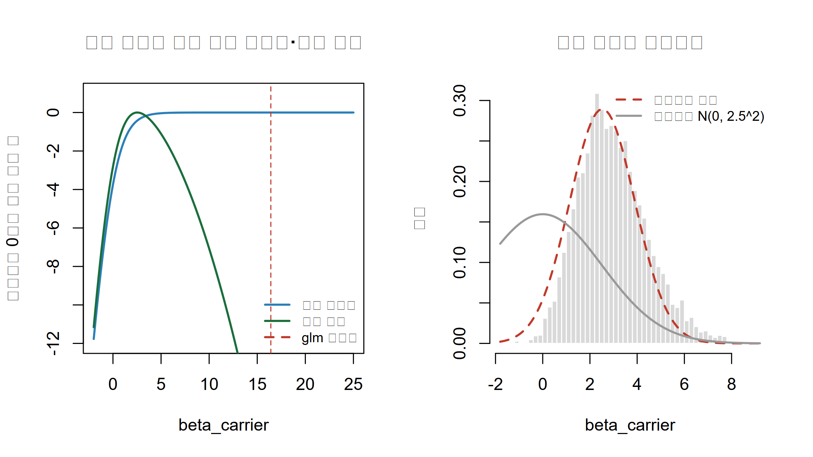
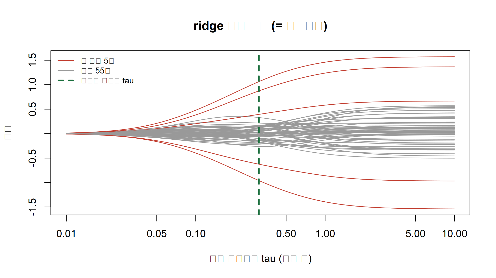
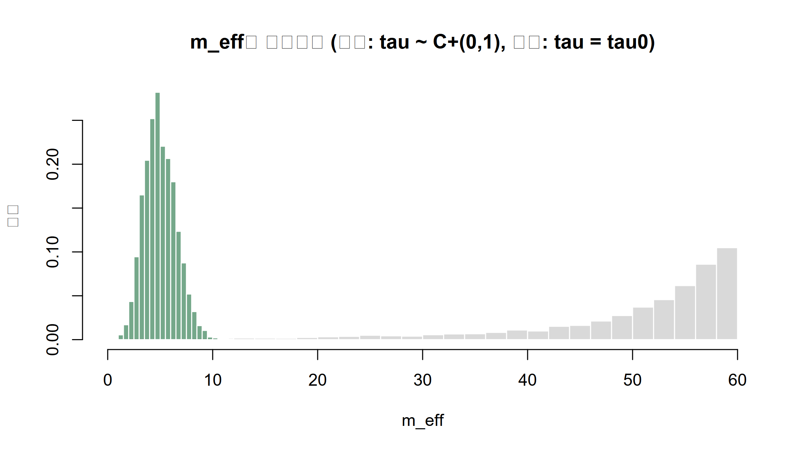

ridge와 lasso를 사전분포로 다시 읽고, horseshoe 사전분포의 깁스 표집기를 직접 만들며, 로지스틱 회귀의 완전 분리를 약정보 사전분포로 해결합니다.
Author
Eunji Ha
Published
September 21, 2026
학습 목표
정규 사전분포를 둔 선형회귀의 사후평균이 ridge 해와 같고 \(\lambda = \sigma^2/\tau^2\)임을 유도하고 코드로 확인할 수 있다.
lasso가 Laplace 사전분포의 사후최빈값(MAP)임을 설명하고, 좌표하강법으로 구현해 정확한 0이 나오는 이유를 설명할 수 있다.
horseshoe 사전분포의 전역·국소 척도와 축소 계수 \(\kappa\)의 말굽 모양을 설명하고, 깁스 표집기를 직접 구현할 수 있다.
로지스틱 회귀의 완전 분리에서 최대가능도 추정치가 발산하는 이유와 약정보 사전분포가 이를 막는 방식을 설명할 수 있다.
환자 80명의 종양에서 유래한 세포로 항암제 반응(예: 로그 IC50)을 재고, 후보 유전자 60개의 발현으로 반응을 예측하는 모형을 만든다고 합시다. 생물학적으로는 반응을 실제로 좌우하는 유전자가 몇 개뿐이고 나머지는 잡음이라고 볼 이유가 충분합니다. 변수 수 \(p=60\)이 표본 수 \(n=80\)에 가까우면 최소제곱(ordinary least squares, OLS)은 계산은 되지만 추정치가 크게 흔들리고, \(p>n\)이면 해가 하나로 정해지지도 않습니다. W7에서는 배치 효과 8개를 하나의 분포 \(\mathcal{N}(\mu,\tau^2)\)로 묶어 서로 정보를 빌리게 했습니다. 이번 주에는 같은 일을 회귀계수 60개에 합니다. 계수들이 하나의 사전분포에서 나왔다고 두는 순간 축소가 생기고, 그 사전분포의 모양(정규, Laplace, horseshoe)이 축소의 성격을 정합니다. 빈도주의에서 벌점(penalty)이라 부르던 ridge와 lasso가 사실은 특정 사전분포의 사후평균·사후최빈값이라는 점도 드러납니다.
가상의 데이터: p가 n에 가까울 때
아래는 가상의 데이터입니다. 이웃한 유전자끼리 발현 상관이 있도록(\(0.5^{|i-j|}\)) 만들고 열마다 평균 0·표준편차 1로 표준화했습니다. 반응 \(y\)는 중심화했으므로 절편은 따로 두지 않습니다(절편에 평평한 사전분포를 주는 것과 같습니다).
set.seed(8); n <-80; p <-60# 환자 80명, 후보 유전자 60개sigma_x <-0.5^abs(outer(1:p, 1:p, "-")) # 이웃 유전자끼리 상관 0.5^|i-j|x_mat <-matrix(rnorm(n * p), n, p) %*%chol(sigma_x)x_mat <-apply(x_mat, 2, function(v) (v -mean(v)) /sd(v)) # 열 표준화idx_true <-c(5, 17, 28, 41, 53); beta_true <-rep(0, p); beta_true[idx_true] <-c(1.5, -1.2, 1.0, 0.8, -0.6) # 5개만 0이 아님y <-drop(x_mat %*% beta_true +rnorm(n, 0, 1)); y <- y -mean(y) # 약물 반응 (중심화)b_ols <-drop(solve(crossprod(x_mat), crossprod(x_mat, y))) # OLSrmse <-function(b, j =1:p) sqrt(mean((b[j] - beta_true[j])^2)) # 계수 RMSEcat(sprintf("OLS 계수 RMSE = %.3f | 참값이 0인 55개 중 |OLS 추정치|의 최댓값 = %.2f\n", rmse(b_ols), max(abs(b_ols[-idx_true]))))
두 계산의 차이는 부동소수점 오차 수준입니다. ridge는 OLS보다 RMSE를 절반 가까이 줄이지만, 표를 보면 1.5가 1.06으로, 0.8이 0.39로 깎여 두 신호의 95% 신용구간이 참값을 덮지 못합니다.
Tip
정규 사전분포는 하나의 \(\tau\)로 모든 계수를 같은 비율로 당깁니다. 잡음 계수를 0으로 누를 만큼 \(\tau\)를 줄이면 큰 신호도 똑같이 깎이고, 신호를 살릴 만큼 키우면 잡음이 남습니다. “대부분은 0 근처, 몇 개는 크다”는 희소성 믿음을 정규분포 하나로는 표현할 수 없습니다.
Laplace 사전분포: lasso는 사후최빈값이다
Laplace(이중지수, double exponential) 분포 \(p(\beta_j) \propto \exp(-|\beta_j|/b)\)는 0에서 뾰족하게 꺾이고 꼬리는 정규분포보다 두껍습니다. 이 사전분포의 사후최빈값(maximum a posteriori, MAP)이 Tibshirani(1996)의 lasso입니다. 0에서의 꺾임 때문에 최적해에서 계수가 정확히 0이 될 수 있습니다.
수식으로 보기: lasso와 soft-thresholding
음의 로그사후에 \(\sigma^2\)를 곱하면 \[ \hat\beta_{\text{MAP}} = \arg\min_\beta\ \tfrac{1}{2}\|y - X\beta\|^2 + \lambda\sum_j |\beta_j|, \qquad \lambda = \sigma^2/b \] 나머지 계수를 고정하면 \(\beta_j\) 하나의 문제가 되고, 부분잔차(partial residual) \(r_{(j)} = y - \sum_{k\ne j} x_k\beta_k\)에 대해 해는 \[ \beta_j \leftarrow \frac{S(x_j' r_{(j)},\ \lambda)}{x_j'x_j}, \qquad S(z, g) = \text{sign}(z)\max(|z| - g,\ 0) \] 입니다. \(|x_j' r_{(j)}| \le \lambda\)이면 정확히 0이 됩니다. 이 갱신을 계수마다 돌아가며 반복하는 것이 좌표하강(coordinate descent)이고, 최적해에서는 0인 계수마다 \(|x_j'(y - X\hat\beta)| \le \lambda\)가 성립합니다(KKT 조건).
soft <-function(z, g) sign(z) *pmax(abs(z) - g, 0) # soft-thresholdinglasso_cd <-function(x, y, lambda, beta =rep(0, ncol(x)), max_sweep =1000, tol =1e-8) { xtx <-crossprod(x); xty <-drop(crossprod(x, y))for (s in1:max_sweep) { b_old <- beta # 한 바퀴(sweep) 전의 값for (j inseq_along(beta)) # 좌표 하나씩, 나머지는 고정. 첫 인자가 x_j'(부분잔차) beta[j] <-soft(xty[j] -sum(xtx[j, -j] * beta[-j]), lambda) / xtx[j, j]if (max(abs(beta - b_old)) < tol) break } beta}lam_max <-max(abs(crossprod(x_mat, y))); lam_grid <-exp(seq(log(lam_max), log(0.03* lam_max), length.out =25)) # lam_max 이상이면 모두 0set.seed(1); fold <-sample(rep(1:5, length.out = n)) # 5겹 교차검증cv_one <-function(k) { # warm start: 앞 lambda의 해에서 출발 tr <- fold != k; b <-rep(0, p); out <-numeric(length(lam_grid))for (i inseq_along(lam_grid)) { b <-lasso_cd(x_mat[tr, ], y[tr], lam_grid[i], b, tol =1e-6); out[i] <-mean((y[!tr] - x_mat[!tr, ] %*% b)^2) } out}cv_mse <-rowMeans(sapply(1:5, cv_one)); lam_cv <- lam_grid[which.min(cv_mse)]b_lasso <-lasso_cd(x_mat, y, lam_cv); kkt <-abs(drop(crossprod(x_mat, y - x_mat %*% b_lasso))) # 0인 계수에서 lambda 이하여야 함cat(sprintf("lambda = %.2f (격자 %d번째) | 0이 아닌 계수 %d개 (참 신호 %d개 포함) | 0인 계수의 max|x'r| = %.2f\n", lam_cv, which.min(cv_mse), sum(b_lasso !=0), sum(b_lasso[idx_true] !=0), max(kkt[b_lasso ==0])))
lambda = 4.77 (격자 22번째) | 0이 아닌 계수 24개 (참 신호 5개 포함) | 0인 계수의 max|x'r| = 4.45
\(\lambda = 4.77\)에서 36개 계수가 정확히 0이고, 그 계수들의 \(|x_j'r|\) 최댓값 4.45가 \(\lambda\)보다 작아 KKT 조건을 만족합니다. 이 0들은 반올림이 아니라 최적해 자체입니다. 다만 교차검증은 예측 오차를 기준으로 \(\lambda\)를 고르기 때문에 참 신호 5개 외에 잡음 유전자 19개도 함께 골랐습니다.
Warning
희소성은 MAP의 성질이지 사후분포의 성질이 아닙니다. Park & Casella(2008)의 베이지안 lasso는 같은 Laplace 사전분포로 사후분포 전체를 표집합니다. 연속 사전분포 아래에서는 \(\Pr(\beta_j = 0 \mid y) = 0\)이므로 사후표본은 절대 정확히 0이 아니고 사후평균도 0이 아닙니다. “베이지안 lasso를 돌렸더니 변수가 선택되었다”는 말은 성립하지 않습니다. 또 Laplace 사전분포는 꼬리가 지수적으로만 두꺼워서 큰 효과도 일정량 깎습니다. 아래 축소 곡선에서 lasso와 베이지안 lasso가 큰 \(y\)에서도 대각선보다 \(\sigma^2/b\)(그림의 설정에서는 1)만큼 아래에 있는 것이 그 편향입니다.
Horseshoe: 전역 척도로 누르고 국소 척도로 빠져나가기
원하는 것은 둘입니다. 잡음 계수는 0으로 세게 누르고, 큰 신호는 거의 건드리지 않는 것. Carvalho, Polson & Scott(2010)의 horseshoe는 계수마다 국소 척도(local scale)\(\lambda_j\)를 따로 주고 모두가 전역 척도(global scale)\(\tau\)를 공유하게 합니다. \(\tau\)가 작으면 모든 계수가 0 쪽으로 눌리고, \(\lambda_j\)는 반코시(half-Cauchy)라서 꼬리가 매우 두꺼우므로 데이터가 강하게 요구하는 몇 개만 이 압력에서 빠져나갑니다. W7이 \(\tau\) 하나로 모든 그룹을 묶었다면, horseshoe는 계수마다 자기 척도를 하나씩 더 가진 계층 모형입니다.
수식으로 보기: horseshoe와 축소 계수 kappa
\[ \beta_j \mid \lambda_j, \tau, \sigma \sim \mathcal{N}(0,\ \lambda_j^2\tau^2\sigma^2), \qquad \lambda_j \sim C^+(0,1), \qquad \tau \sim C^+(0,1) \] 여기서는 Makalic & Schmidt(2016)처럼 \(\sigma\)를 곱한 척도를 씁니다. \(C^+(0,1)\)은 반코시입니다. 정규평균 문제 \(y_j \sim \mathcal{N}(\beta_j, 1)\)에서 \(\lambda_j, \tau\)를 알면 W7의 정규-정규 계산으로 \[ \mathbb{E}[\beta_j \mid y_j, \lambda_j, \tau] = (1-\kappa_j)\,y_j, \qquad \kappa_j = \frac{1}{1 + \lambda_j^2\tau^2} \] 이고 \(\kappa_j\)는 W7의 \(B_j\)(관측 분산 1, 사전 분산 \(\lambda_j^2\tau^2\))와 같습니다. \(\tau = 1\)이면 \(\kappa_j \sim \text{Beta}(1/2, 1/2)\), 곧 밀도 \(\propto \kappa^{-1/2}(1-\kappa)^{-1/2}\)로 양 끝(0: 축소 없음, 1: 완전 축소)이 솟은 말굽 모양이라 이름이 붙었습니다. 일반 \(\tau\)에서는 \(p(\kappa \mid \tau) \propto \kappa^{-1/2}(1-\kappa)^{-1/2} / \{1 + (\tau^2-1)\kappa\}\)입니다.
set.seed(2); lam_draw <-abs(rcauchy(1e5)) # lambda_j ~ C+(0,1)kappa_1 <-1/ (1+ lam_draw^2*1^2); kappa_01 <-1/ (1+ lam_draw^2*0.1^2) # tau = 1, tau = 0.1par(mfrow =c(1, 2))hist(kappa_1, breaks =50, freq =FALSE, col ="grey60", border ="white", main ="tau = 1: kappa의 사전분포", xlab ="축소 계수 kappa", ylab ="밀도")curve(dbeta(x, 0.5, 0.5), add =TRUE, col ="#1a6e3c", lwd =2); legend("top", "Beta(1/2, 1/2)", col ="#1a6e3c", lwd =2, bty ="n")hist(kappa_01, breaks =50, freq =FALSE, col ="grey60", border ="white", main ="tau = 0.1: kappa의 사전분포", xlab ="축소 계수 kappa", ylab ="밀도")curve(0.1/ pi / (sqrt(x * (1- x)) * (1+ (0.1^2-1) * x)), add =TRUE, col ="#1a6e3c", lwd =2) # p(kappa | tau) 정확한 밀도
\(\tau=1\)에서는 대칭인 말굽입니다. \(\tau=0.1\)로 줄이면 질량이 \(\kappa=1\)(완전 축소) 쪽으로 몰리지만, 계수의 약 6%는 여전히 \(\kappa<0.5\)로 빠져나갈 여지가 있습니다. 반코시의 두꺼운 꼬리 덕분입니다.
Tip
전역 \(\tau\)는 “신호가 얼마나 드문가”, 국소 \(\lambda_j\)는 “이 계수가 예외인가”를 맡습니다. 데이터가 \(\tau\)를 작게 추정하면 잡음 계수 전체가 0 쪽으로 눌리고, 진짜 신호는 자기 \(\lambda_j\)를 키워 그 압력을 상쇄합니다. 정규 사전분포에서는 이 두 역할이 하나의 \(\tau\)에 묶여 있었습니다.
축소 곡선: 네 사전분포를 한 그림에
관측 하나 \(y \sim \mathcal{N}(\beta, 1)\)만 있는 정규평균 문제에서 추정치를 \(y\)의 함수로 그리면 사전분포의 성격이 그대로 보입니다. ridge(\(\tau=1\))는 \(y/2\), lasso MAP(\(b=1\))는 \(S(y, 1)\)이고, 베이지안 lasso와 horseshoe(\(\tau\) 고정)의 사후평균은 1차원 수치적분(integrate)으로 계산합니다.
hs_mean <-function(y, tau) { # horseshoe 사후평균 (1 - E[kappa | y]) y. f는 kappa의 비정규화 사후밀도 f <-function(k) exp(-k * y^2/2) / (sqrt(1- k) * (1+ (tau^2-1) * k)) y * (1-integrate(function(k) k *f(k), 0, 1)$value /integrate(f, 0, 1)$value)}blasso_mean <-function(y, b =1) { # Laplace(0, b) 사전분포의 사후평균 (sigma = 1), 0에서 꺾이므로 나눠 적분 g <-function(t) dnorm(y, t) *exp(-abs(t) / b) num <-integrate(function(t) t *g(t), -Inf, 0)$value +integrate(function(t) t *g(t), 0, Inf)$value num / (integrate(g, -Inf, 0)$value +integrate(g, 0, Inf)$value)}y_grid <-seq(-7, 7, length.out =281); plot(y_grid, y_grid, type ="l", lty =3, col ="grey60", main ="정규평균 문제의 축소 곡선", xlab ="관측값 y", ylab ="beta의 추정치")lines(y_grid, y_grid /2, col ="#2c7fb8", lwd =2); lines(y_grid, soft(y_grid, 1), col ="#c0392b", lwd =2) # ridge, lasso MAPlines(y_grid, sapply(y_grid, blasso_mean), col ="#c0392b", lwd =2, lty =2); lines(y_grid, sapply(y_grid, hs_mean, tau =1), col ="#1a6e3c", lwd =2, lty =2)lines(y_grid, sapply(y_grid, hs_mean, tau =0.1), col ="#1a6e3c", lwd =3)legend("topleft", bty ="n", cex =0.8, lwd =c(1, 2, 2, 2, 2, 3), lty =c(3, 1, 1, 2, 2, 1), col =c("grey60", "#2c7fb8", "#c0392b", "#c0392b", "#1a6e3c", "#1a6e3c"),legend =c("축소 없음 (y)", "ridge 사후평균", "lasso (MAP)", "베이지안 lasso 사후평균","horseshoe 사후평균, tau = 1", "horseshoe 사후평균, tau = 0.1"))
ridge는 모든 \(y\)를 반으로 줄입니다. lasso MAP는 \(|y|\le 1\)을 정확히 0으로 만들고 그 밖에서는 1씩 깎습니다. 같은 사전분포의 사후평균(베이지안 lasso)은 0이 되는 구간이 아예 없으면서 큰 \(y\)에서는 역시 1씩 깎습니다(\(y=6\)에서 5.0). horseshoe(\(\tau=0.1\))는 \(y=1\)을 0.07로 거의 지우면서 \(y=6\)은 5.63으로 거의 그대로 둡니다. 작은 관측은 잡음으로, 큰 관측은 신호로 다루는 모양입니다.
로지스틱 회귀와 완전 분리
사례-대조군(case-control) 연구처럼 반응이 0/1이면 로지스틱 회귀 \(\Pr(y_i=1) = \text{logit}^{-1}(x_i'\beta)\)를 씁니다. 로짓 스케일 모수 \(\beta\)에는 켤레 사전분포가 없으므로 W4의 라플라스 근사나 W5의 메트로폴리스로 사후분포를 구합니다. 사전분포가 특히 중요해지는 상황이 완전 분리(complete separation)입니다. 희귀 변이 보유자가 모두 환자라면 보유 여부의 계수를 키울수록 그 사람들의 적합 확률이 1에 다가가 가능도가 계속 커집니다. 최대가능도 추정치는 무한대이고, glm은 반복을 멈춘 지점의 큰 숫자와 거대한 표준오차를 돌려줍니다. Gelman, Jakulin, Pittau & Su(2008)는 입력을 척도화한 뒤 계수에 Cauchy(0, 2.5) 같은 약정보(weakly informative) 사전분포를 주면 이런 상황에서도 유한하고 안정적인 추정치를 얻는다고 제안했습니다. 여기서는 꼬리가 더 얇은 \(\mathcal{N}(0, 2.5^2)\)을 씁니다. 실습 (3)의 가상의 데이터는 환자·대조군 120명으로, 표준화한 다유전자 점수(polygenic risk score, PRS)가 환자 여부에 영향을 주고 희귀 변이 보유자 6명은 모두 환자입니다.
수식으로 보기: 로지스틱 회귀의 로그사후
\[ \log p(\beta \mid y) = \sum_{i=1}^n \left\{ y_i\eta_i - \log(1 + e^{\eta_i}) \right\} + \sum_k \log \mathcal{N}(\beta_k;\ 0,\ s_k^2) + \text{상수}, \qquad \eta_i = x_i'\beta \] 보유자가 모두 \(y_i=1\)이면 보유 계수 \(\beta_c \to \infty\)에서 그들의 항 \(\eta_i - \log(1+e^{\eta_i})\)가 아래에서 0으로 단조 증가하므로, 가능도는 최댓값에 도달하지 않고 양의 상수로 수렴합니다. 그래서 평평한 사전분포에서는 사후분포가 적분되지 않아(부적절, improper) 아예 정의되지 않습니다. 정규 사전분포의 \(-\beta_c^2/(2s_c^2)\) 항이 오른쪽 꼬리를 잘라 사후분포를 적절하게 만듭니다. log1pexp는 \(\log(1+e^\eta)\)의 오버플로를 막는 W4/W5와 같은 도우미입니다.
실습: base R로 직접 구현
(1) horseshoe 깁스 표집기
반코시는 그대로는 켤레가 아니지만, W7에서 \(\tau\)에 한 것처럼 보조변수를 넣어 역감마 두 개의 혼합으로 쓰면 모든 완전조건부가 표준분포가 됩니다. Makalic & Schmidt(2016)는 이 트릭을 모든 \(\lambda_j\)와 \(\tau\)에 적용했습니다. \(\sigma^2\)에는 \(p(\sigma^2) \propto 1/\sigma^2\)를 줍니다.
par(mfrow =c(1, 2)); brk <-seq(min(fit_hs$beta[, 5:6]) -0.05, max(fit_hs$beta[, 5:6]) +0.05, by =0.025) # 두 히스토그램에 같은 구간plot(log(fit_hs$tau), type ="l", col ="#2c7fb8", main ="전역 척도 log(tau)의 체인", xlab ="반복", ylab ="log(tau)")hist(fit_hs$beta[, 6], breaks = brk, freq =FALSE, col ="grey60", border =NA, xlim =c(-0.4, 1.9), main ="사후분포: 잡음(6번) vs 신호(5번)", xlab ="계수 beta", ylab ="밀도")hist(fit_hs$beta[, 5], breaks = brk, freq =FALSE, col =adjustcolor("#1a6e3c", 0.6), border =NA, add =TRUE)abline(v = beta_true[5], col ="#c0392b", lwd =2); legend("top", c("beta_6 (참값 0)", "beta_5 (참값 1.5)"), fill =c("grey60", adjustcolor("#1a6e3c", 0.6)), bty ="n", cex =0.8)

계수 \(\beta_j\)의 ESS는 가장 느린 것도 568로 충분하지만, 전역 척도 \(\log\tau\)의 ESS는 143으로 W6의 기준 400에 못 미칩니다. \(\tau\)와 \(\lambda_j\)는 곱 \(\lambda_j\tau\)로만 \(\beta_j\)의 사전분산에 들어가 서로 강하게 얽혀 있고, 한 번에 하나씩 좌표 방향으로 움직이는 깁스는 이런 상관에 약합니다(W5). \(\tau\) 자체를 보고하려면 반복을 더 늘려야 합니다. 오른쪽 그림에서 잡음 계수의 사후분포는 0에 뾰족하게 몰리고 꼬리가 길며, 신호 계수의 사후분포는 참값 주변에 놓입니다.
horseshoe의 전체 RMSE(0.049)가 가장 작고, 특히 잡음 55개의 오차(0.040)를 ridge(0.123)의 3분의 1 아래로 줄입니다. 신호 5개에서는 ridge가 큰 신호를 깎아 오히려 OLS보다 나쁘고(0.294 대 0.286), lasso와 horseshoe는 같은 수준(0.103)입니다. horseshoe의 95% 신용구간은 60개 참값을 모두 덮고, 0을 포함하지 않는 구간은 정확히 참 신호 5개입니다. 다만 한 번의 가상 데이터에서 나온 결과이고, 신용구간이 0을 포함하느냐로 변수를 고르는 것은 편의적인 규칙일 뿐 사후분포가 “이 계수는 0이다”라고 말해 주는 것은 아닙니다.
bc_grid <-seq(-2, 25, length.out =300); ll_c <-sapply(bc_grid, function(v) log_lik_logit(replace(fit_map$par, 2, v)))lp_c <-sapply(bc_grid, function(v) log_post_logit(replace(fit_map$par, 2, v))) # 보유 계수 외에는 MAP에 고정par(mfrow =c(1, 2)); plot(bc_grid, ll_c -max(ll_c), type ="l", lwd =2, col ="#2c7fb8", ylim =c(-12, 1), main ="보유 계수에 따른 로그 가능도·로그 사후", xlab ="beta_carrier", ylab ="최댓값을 0으로 맞춘 로그 값")lines(bc_grid, lp_c -max(lp_c), lwd =2, col ="#1a6e3c"); abline(v =coef(fit_glm)[2], col ="#c0392b", lty =2)legend("bottomright", c("로그 가능도", "로그 사후", "glm 추정치"), col =c("#2c7fb8", "#1a6e3c", "#c0392b"), lty =c(1, 1, 2), lwd =2, bty ="n", cex =0.8)hist(draws_c, breaks =50, freq =FALSE, col ="grey85", border ="white", main ="보유 계수의 사후분포", xlab ="beta_carrier", ylab ="밀도")curve(dnorm(x, fit_map$par[2], sd_lap), add =TRUE, col ="#c0392b", lwd =2, lty =2); curve(dnorm(x, 0, 2.5), add =TRUE, col ="grey60", lwd =2)legend("topright", c("라플라스 근사", "사전분포 N(0, 2.5^2)"), col =c("#c0392b", "grey60"), lwd =2, lty =c(2, 1), bty ="n", cex =0.8)

glm은 경고 없이 수렴했다고 보고하면서 보유 계수로 16.41, 표준오차 942.36을 돌려줍니다. 이 값은 반복을 멈춘 위치일 뿐 추정치가 아닙니다. 왼쪽 그림의 로그 가능도는 오른쪽으로 갈수록 평평해질 뿐 봉우리가 없습니다. 사전분포를 더하면 봉우리가 2.52에 생기고, 사후분포는 95% 신용구간 0.49~6.22로 유한합니다. 오른쪽으로 긴 비대칭이어서 대칭인 라플라스 근사(W4)는 95% 구간이 -0.18~5.23으로, 왼쪽 꼬리를 과대, 오른쪽 꼬리를 과소평가합니다. 분리되지 않은 PRS 계수는 glm(0.77)과 사후중앙값이 거의 같습니다.
실습: 패키지로 풀기
CI 환경에 아래 패키지가 없어 실행하지 않습니다. 같은 문제를 실제 분석에서 푸는 형태만 보여 둡니다. brms의 horseshoe()는 Piironen & Vehtari(2017)의 정규화 horseshoe(regularized horseshoe)로 큰 계수에도 약한 상한(slab)을 두며, par_ratio(0이 아닌 계수 수 대 0인 계수 수의 비)를 주면 전역 척도를 par_ratio / sqrt(N)으로 정합니다. 연습문제 3의 \(\tau_0\)와 같은 발상입니다.
library(glmnet) # 정규(alpha = 0)·Laplace(alpha = 1) 사전분포의 MAP 경로cv_ridge <-cv.glmnet(x_mat, y, alpha =0) # 목적함수 척도와 표준화 방식이 달라cv_lasso <-cv.glmnet(x_mat, y, alpha =1) # lambda 값이 위 직접 구현과 그대로 같지는 않습니다coef(cv_lasso, s ="lambda.min") # 교차검증 최소 lambda에서의 계수library(brms)dat <-data.frame(y = y, x_mat) # 열 이름 X1 ... X60fml <-as.formula(paste("y ~", paste(colnames(dat)[-1], collapse =" + ")))fit_hs_brm <-brm(fml, data = dat, family =gaussian(), prior =prior(horseshoe(df =1, par_ratio =0.1), class = b), # par_ratio ~ p0/(p - p0)chains =4, iter =2000, seed =1, control =list(adapt_delta =0.99))library(rstanarm)fit_hs_rsa <-stan_glm(fml, data = dat, family =gaussian(), prior =hs(), seed =1)fit_logit <-stan_glm(case ~ carrier + prs, data =data.frame(case, carrier, prs), family =binomial(), # 완전 분리 예제prior =normal(0, 2.5), prior_intercept =normal(0, 10), seed =1)
연습문제
문제 1. lambda = sigma2/tau2 확인과 ridge 경로
\(\tau\)를 0.01부터 10까지 바꿔 가며 (a) \(\lambda = \sigma^2/\tau^2\)인 ridge 해와 켤레 사후평균이 모든 \(\tau\)에서 같은지 확인하고, (b) 계수 경로를 그려 \(\tau \to \infty\)에서 OLS로 수렴함을 보이십시오. \(\sigma\)는 위의 sigma_eb를 씁니다.
풀이
tau_set <-exp(seq(log(0.01), log(10), length.out =60)); path <-sapply(tau_set, function(t) solve(crossprod(x_mat) + (sigma_eb^2/ t^2) *diag(p), crossprod(x_mat, y)))post_m <-sapply(tau_set, function(t) solve(crossprod(x_mat) / sigma_eb^2+diag(p) / t^2, crossprod(x_mat, y) / sigma_eb^2))cat(sprintf("모든 tau에서 최대 차이 = %.1e | tau = 10일 때 OLS와의 최대 차이 = %.4f\n", max(abs(path - post_m)), max(abs(path[, 60] - b_ols))))
모든 tau에서 최대 차이 = 1.2e-14 | tau = 10일 때 OLS와의 최대 차이 = 0.0039
matplot(tau_set, t(path), type ="l", lty =1, log ="x", col =ifelse(1:p %in% idx_true, "#c0392b", "grey60"),main ="ridge 계수 경로 (= 사후평균)", xlab ="사전 표준편차 tau (로그 축)", ylab ="계수")abline(v = tau_eb, col ="#1a6e3c", lty =2, lwd =2); legend("topleft", c("참 신호 5개", "잡음 55개", "경험적 베이즈 tau"), col =c("#c0392b", "grey60", "#1a6e3c"), lty =c(1, 1, 2), lwd =2, bty ="n", cex =0.8)

\(\tau\)가 작으면 모든 계수가 0에 붙고, 커지면 OLS로 펼쳐집니다. 경험적 베이즈 \(\tau\)(초록 점선)에서도 잡음 계수들은 아직 꽤 퍼져 있고 신호는 대부분 참값보다 작습니다. 정규 사전분포 하나로는 두 목표를 동시에 이룰 수 없다는 것이 경로 그림에서도 보입니다.
문제 2. 완전 분리에서 사전 척도 민감도
보유 계수의 사전 표준편차 \(s\)를 1, 2.5, 5, 10, 100으로 바꿔 가며 MAP를 구하고, 분리되지 않은 PRS 계수와 비교하십시오.
PRS 계수는 사전 척도를 100배 바꿔도 거의 그대로입니다. 가능도가 이 계수를 충분히 결정하기 때문입니다. 반면 보유 계수는 사전 표준편차를 넓힐수록 계속 커집니다. 분리된 방향에서는 가능도가 평평해 오른쪽 꼬리를 오로지 사전분포가 정하기 때문입니다. 따라서 완전 분리에서 나온 추정치는 사전 척도와 함께 보고해야 하고, “효과가 양수일 가능성이 높다”는 결론은 받아들일 수 있어도 오즈비의 크기는 믿기 어렵습니다.
문제 3. horseshoe 전역 척도의 의미
Piironen & Vehtari(2017)는 0이 아닌 계수가 \(p_0\)개쯤이라고 예상할 때 전역 척도의 기준값으로 \(\tau_0 = \frac{p_0}{p-p_0}\frac{\sigma}{\sqrt{n}}\)를 제안했습니다. 표준화한 \(X\)에서 사전 유효 비영 계수 수(effective number of nonzero coefficients) \(m_{\text{eff}} = \sum_j (1-\kappa_j)\), \(\kappa_j = 1/(1 + n\tau^2\lambda_j^2)\)의 사전 기댓값을 \(p_0\)로 맞춘 값입니다. (a) \(p_0=5\)일 때 \(\tau_0\)를 구하고 \(\tau=\tau_0\)와 \(\tau \sim C^+(0,1)\)에서 \(m_{\text{eff}}\)의 사전분포를 시뮬레이션으로 비교하십시오. (b) gibbs_horseshoe에 tau_scale = tau0을 주어 \(\tau \sim C^+(0, \tau_0)\)로 바꾸면 추정이 어떻게 달라지는지 보십시오. 이 챕터의 표기에서는 \(\beta_j\)의 척도에 이미 \(\sigma\)가 곱해져 있으므로 \(\tau_0 = p_0/\{(p-p_0)\sqrt n\}\)입니다.
풀이
tau0 <-5/ (p -5) /sqrt(n)set.seed(3); lam_sim <-matrix(abs(rcauchy(4000* p)), 4000, p) # 사전분포에서 lambda_jm_eff <-function(tau) rowSums(1-1/ (1+ n * tau^2* lam_sim^2)); m_fix <-m_eff(tau0); m_hc <-m_eff(abs(rcauchy(4000))) # tau0 고정 vs C+(0,1)fit_hs0 <-gibbs_horseshoe(x_mat, y, n_iter =5000, seed =1, tau_scale = tau0); b_hs0 <-colMeans(fit_hs0$beta)cat(sprintf("tau0 = %.4f | m_eff 평균: tau = tau0 에서 %.1f, tau ~ C+(0,1) 에서 %.1f\n", tau0, mean(m_fix), mean(m_hc)))
tau0 = 0.0102 | m_eff 평균: tau = tau0 에서 5.0, tau ~ C+(0,1) 에서 50.0
tau 사후중앙값 0.063 -> 0.042 | 잡음 55개 RMSE 0.040 -> 0.032 | 신호 5개 RMSE 0.103 -> 0.098
hist(m_hc, breaks =40, freq =FALSE, col ="grey85", border ="white", xlim =c(0, p), ylim =c(0, max(hist(m_fix, breaks =30, plot =FALSE)$density)), main ="m_eff의 사전분포 (회색: tau ~ C+(0,1), 초록: tau = tau0)", xlab ="m_eff", ylab ="밀도")hist(m_fix, breaks =30, freq =FALSE, col =adjustcolor("#1a6e3c", 0.6), border ="white", add =TRUE)

\(\tau \sim C^+(0,1)\)은 무정보처럼 보이지만 \(n=80\)에서는 “60개 중 50개 정도가 0이 아니다”라는 조밀한 모형에 사전 질량 대부분을 둡니다. \(\tau_0\)는 “5개쯤”이라는 믿음을 척도로 옮긴 것입니다. 사전 척도를 \(\tau_0\)로 줄이면 \(\tau\)의 사후중앙값이 0.063에서 0.042로 작아지고 잡음 계수가 더 강하게 눌립니다. 이 데이터는 신호가 뚜렷해 차이가 크지 않지만, 데이터가 약할수록 사전분포의 몫이 커지므로 전역 척도의 선택이 더 중요해집니다.
정리
계수들이 하나의 사전분포에서 나왔다고 두면 축소가 생깁니다. 정규 사전분포의 사후평균이 ridge 해이고 \(\lambda = \sigma^2/\tau^2\)이며, 직교 설계에서 축소 비율은 W7의 \(B_j\) 그대로입니다.
Laplace 사전분포의 사후최빈값이 lasso입니다. 정확한 0은 MAP에서만 나오고, 같은 사전분포의 사후평균·사후표본(베이지안 lasso)에는 0이 없습니다. Laplace는 큰 효과도 일정량 깎습니다.
horseshoe는 전역 척도 \(\tau\)로 전체를 누르고 반코시 국소 척도 \(\lambda_j\)로 신호만 빠져나가게 합니다. 축소 계수 \(\kappa_j\)의 사전분포가 말굽 모양이라 작은 관측은 거의 0으로, 큰 관측은 거의 그대로 둡니다.
반코시 = 역감마 혼합 트릭으로 horseshoe의 모든 완전조건부가 표준분포가 되어 깁스 표집기를 스무 줄 남짓으로 짤 수 있습니다. 이 예제에서 계수 RMSE가 네 방법 중 가장 작았고, \(\tau\)의 ESS는 계수보다 훨씬 작으므로 따로 확인해야 합니다.
로지스틱 회귀의 완전 분리에서는 최대가능도 추정치가 존재하지 않고, 약정보 사전분포가 사후분포를 유한하게 만듭니다. 대신 분리된 계수의 크기는 사전 척도가 정하므로 민감도를 함께 보고합니다.
다음 시간
W9에서는 이번 주의 희소 회귀 사전분포를 GWAS fine-mapping에 씁니다. 한 좌위(locus)의 변이 수백 개 중 인과 변이는 소수라는 희소성 가정은 horseshoe와 같지만, 이번에는 계수가 정확히 0(spike)이거나 0이 아니다(slab)라는 spike-and-slab 사전분포(Mitchell & Beauchamp 1988)의 발상으로, 근사 베이즈 인자를 써서 각 변이의 사후포함확률(posterior inclusion probability, PIP)과 신용집합(credible set)을 계산합니다. 연관불균형(linkage disequilibrium, LD)으로 강하게 상관된 변이들 사이에서 신호를 나누는 SuSiE로 이어집니다.